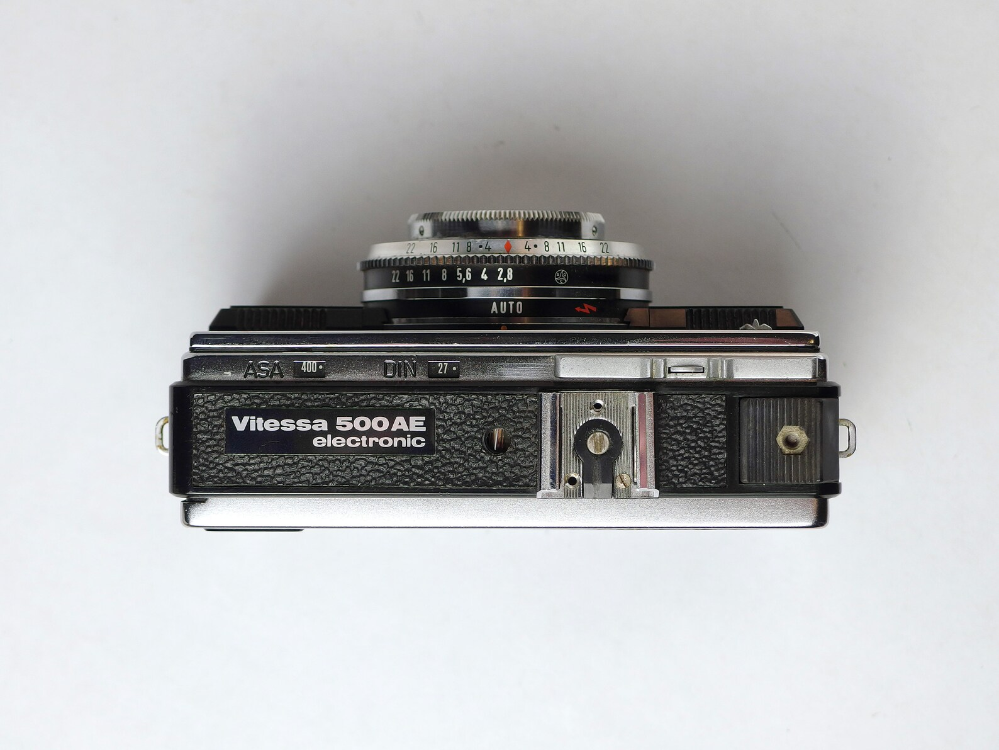
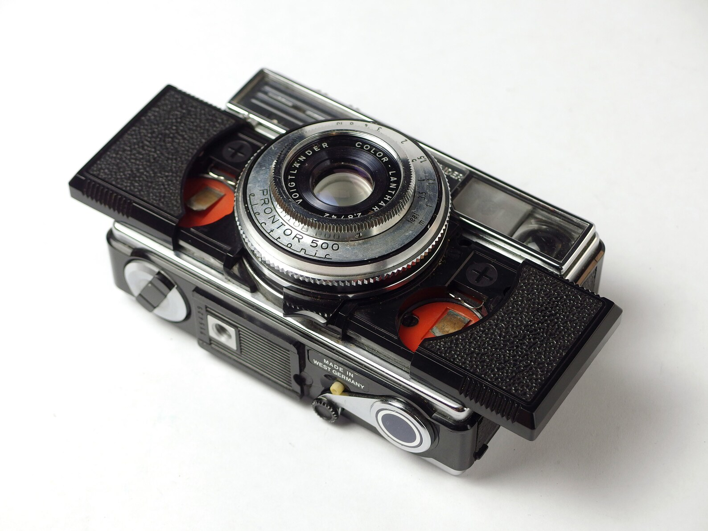
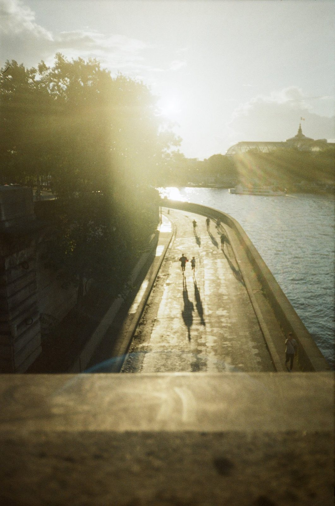

"사장님, 이건 라디오인가요?"
엘리카메라의 진열장 앞에서 손님들이 가장 호기심 어린 눈빛으로 던지는 질문이다. 네모반듯한 디자인에 전면을 가득 채운 큼직한 다이얼, 그리고 윗면의 빨간 버튼까지. 영락없이 60년대의 휴대용 라디오나 카세트테이프를 닮은 이 카메라의 정체는 바로 Voigtländer Vitessa 500이다.
이전 세대의 클래식한 비테사가 우아함의 상징이었다면, 이 녀석은 60년대의 모던함과 톡톡 튀는 팝(Pop) 감성을 입고 태어난 전혀 다른 매력의 친구다.
시대를 앞서간 박스형 디자인

가장 먼저 시선을 뺏는 건 역시 시대를 앞서간 독특한 디자인이다. 렌즈가 툭 튀어나온 전형적인 카메라의 실루엣을 거부하고, 바디 안으로 모든 것을 깔끔하게 정리해 넣은 '박스형 디자인'을 선택했다.
특히 셔터 버튼의 모양이 아주 재미있다. 보통의 작고 둥근 버튼 대신, 상단 한쪽에 넓고 길쭉한 직사각형 형태의 셔터가 바디와 평평하게 매립되어 있다. 튀어나온 부분 없이 매끈하게 떨어지는 이 셔터 덕분에 카메라가 더욱 네모난 박스처럼 보이고, 손가락 전체로 가볍게 누르는 독특한 조작감을 선사한다.
감도(ISO)를 조절하는 다이얼 역시 렌즈가 아닌 바디 전면에 큼직하게 배치되어 있는데, 이걸 돌리고 있으면 정말 라디오 주파수나 볼륨을 맞추는 듯한 아날로그 감성이 손끝에 전해진다.
컬러 란타와 목측식 포커스

단순히 예쁜 디자인이 전부가 아니다. 그 중심에는 보이그랜더가 자랑하는 실용적인 명렌즈 Color-Lanthar 42mm F2.8이 당당하게 자리 잡고 있다.
초점은 촬영자가 피사체와의 거리를 눈대중으로 짐작해 맞추는 클래식한 목측식(Scale Focus)이다. 내가 서 있는 곳에서 피사체까지의 거리가 3미터쯤 되겠다 싶으면, 렌즈의 숫자를 '3'에 두고 셔터를 누르면 된다. 처음엔 낯설 수 있지만, 익숙해지면 뷰파인더를 보지 않고도 빠르게 거리를 맞춰 툭툭 찍어내는 스냅 사진의 묘미를 제대로 느낄 수 있다.
42mm라는 편안한 화각과 밝은 렌즈 덕분에, 흐린 날이나 실내에서도 꽤 훌륭하고 빈티지한 결과물을 만들어낸다.
두 거인의 흔적, 한 카메라에 담기다
카메라의 디자인을 찬찬히 뜯어보면 숨겨진 역사도 발견할 수 있다. 흥미롭게도 독일 카메라의 양대 산맥인 Zeiss Ikon(자이스 이콘)과 Voigtländer(보이그랜더)의 로고가 함께 새겨져 있다.
1960년대, 일본 카메라의 공세에 밀려 보이그랜더가 경쟁사였던 자이스 이콘 그룹과 합병하게 된 격동의 시기를 이 작은 카메라가 증명하고 있는 셈이다. 비록 회사는 넘어갔지만, 보이그랜더의 엔지니어들은 과거 자신들의 최고급 모델이었던 비테사(Vitessa)의 이름을 이 컴팩트 카메라에 물려주며 "작고 저렴하지만, 성능과 이름만은 지키겠다"는 마지막 자존심을 심어놓았다.
비테사로 담은 일상 — 촬영 샘플
아래는 앨리카메라 강혜원 대표가 비테사를 들고 파리에서 직접 담아온 두 장면이다. 빈티지한 밀도감과 따뜻한 색감, 그리고 목측식 카메라 특유의 여유로운 호흡이 그대로 묻어난다.

주파수를 맞추듯, 일상에 초점을
비테사를 목에 걸고 나가는 날이면 "그 예쁜 카메라는 뭐예요?"라는 질문을 한 번쯤은 꼭 받게 되는 매력적인 패션 아이템이기도 하다.
남들과 다른 유니크한 독일 빈티지 카메라를 찾고 있다면, 이 작은 라디오 카메라가 당신의 일상을 특별한 주파수로 맞춰줄 것이다.
실제 비테사를 만나보세요
엘리카메라에서 직접 만져볼 수 있고, 5ft.mag Vol.02에는 더 많은 카메라 이야기와 시네스틸 800T 작품들이 담겨 있습니다.